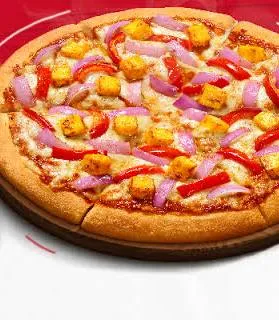
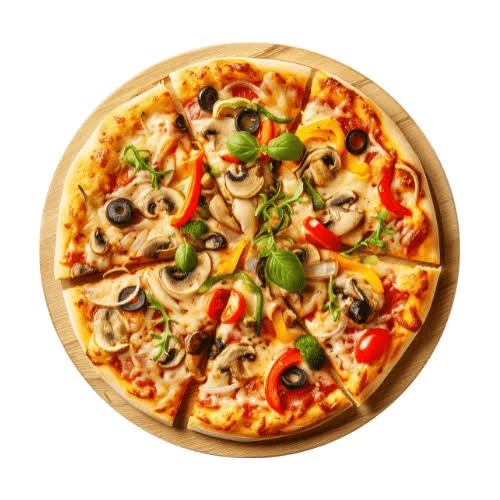

Pizza (Italian: [ˈpittsa], Neapolitan: [ˈpittsə]) is a savory dish of Italian origin consisting of a usually round, flattened base of leavened wheat-based dough topped with tomatoes, cheese, and often various other ingredients such as anchovies, mushrooms, onions, olives, pineapple, meat, etc. It is then baked at a high temperature, traditionally in a wood-fired oven.


A small pizza is sometimes called a pizzetta. A person who makes pizza is known as a pizzaiolo. Pizza is one of the most popular foods in the world and comes in many regional styles and flavors.